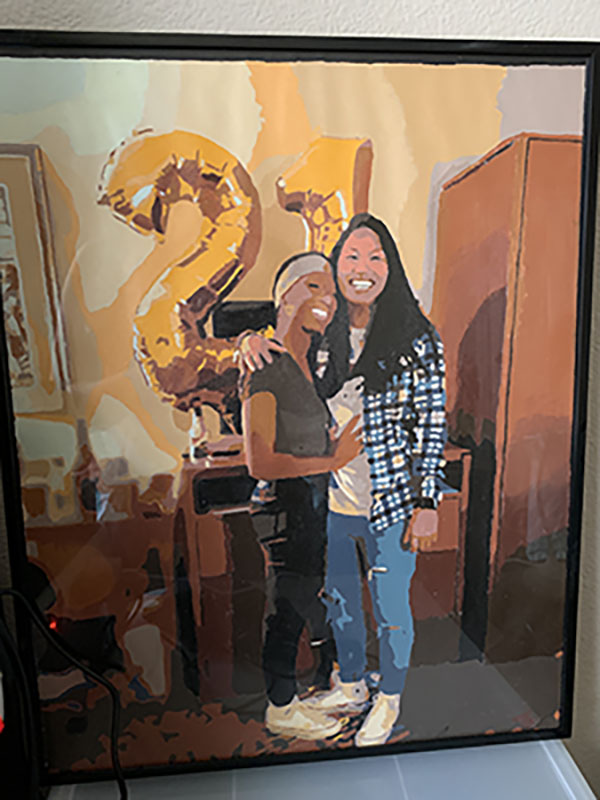

Gracie Stone
Web Designer
I am 20 years old and living in North Carolina. I was adopted from Cambodia when I was very young. I have a three year old Pug who is quite the handful at times.
I have always been into the creative arts. I took web design classes throughout high school as well as some in college. I have always had an attraction towards film but I do not get to do it as much as I would like. I like to be hands on with things as it always keeps me busy and engaged.
Featured Projects
View selected projects below. More information can be found at christinatruong.com.
Paint by Numbers
I painted this photograph for my girlfriend to hang up in her apartment at school. It was a custom paint by numbers so there was not much free hand involved. It turned out better than I first expected it to.
View project / case studyWork Experience
Shift Leader
Cold Stone Creamery
2016-2020
At Cold Stone we are to take customers orders, make ice cream, build and decorate cakes, make waffles, and keep a clean service area for all customers who come in.
- Count money and make bank deposits.
- Investigate and resolve complaints regarding food quality, service, and accomendations.
- Maintain food and equipment inventories and keep inventory records.
- Coordinate assigments of crew memebers to ensure efficient use of food and timely preparation.
Dog/House Sitter
Self Employed
2013-present
Taking care of animals is something I love to do. Being able to make a profit out of it is just an extra. I have always loved animals and even a little more than people.
- Feed and water animals according to schedules and feeding instructions.
- Mix food, liquid formulas, medications or food supplements according to instructions, prescriptions and knowledge of animal species.
- Entrusted by clients in unsupervised weekend visits for their pets.
- Provide house sitting duties which included: collected mail; watered plants; put garbage out.
Education
Wake Technical Community College - Raleigh, NC
Web Designer certificate, 2020
East Carolina University - Greenville, NC
Information and Computer Technology Major, 2019